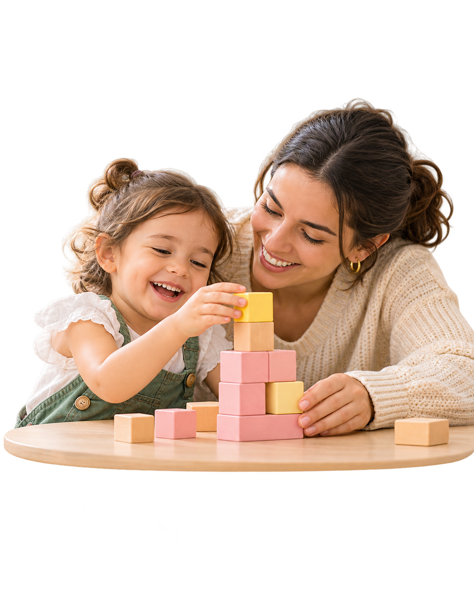
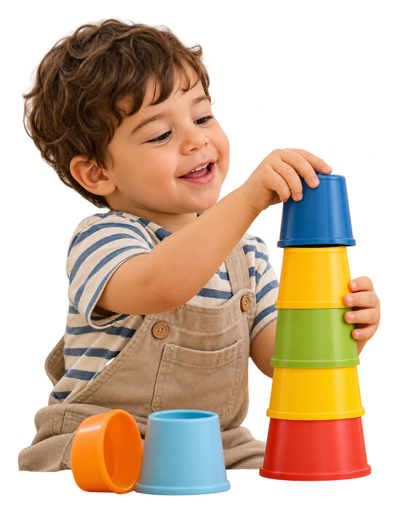
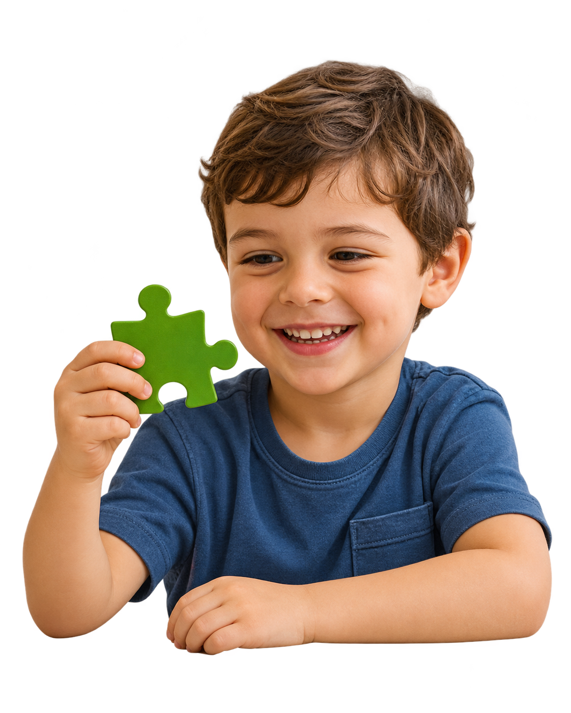

0 a 12 meses
- Canciones y rimas.
- Escondidas con una tela.
- Cuentos con imágenes.
Una guía para las familias con ideas sencillas y económicas que favorecen el desarrollo de los niños.
Explorar actividades →
Pasar demasiado tiempo frente a pantallas puede quitarles tiempo a los niños para dormir, jugar, moverse y compartir con otras personas, actividades clave para su crecimiento.
Evite las pantallas de entretenimiento. Las videollamadas acompañadas son una excepción.
Máximo 1 hora diaria de tiempo sedentario frente a pantallas. Menos es mejor.
Ideas fáciles, económicas y con materiales que probablemente ya tiene en casa.


♡ Acompañe el juego y utilice materiales seguros para la edad, sin piezas pequeñas que puedan causar atragantamiento.